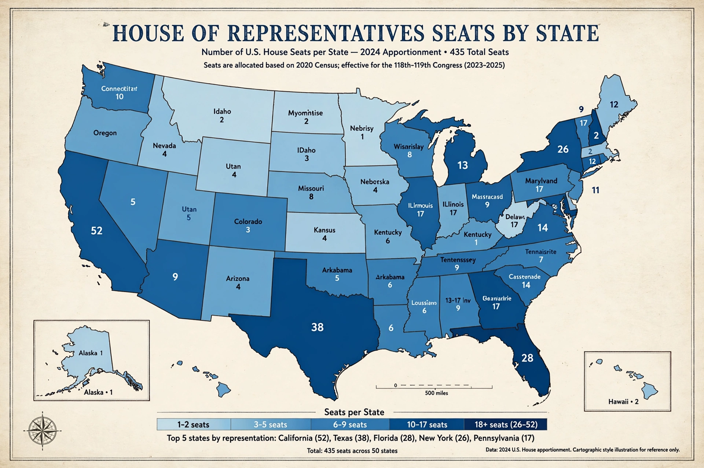

United States congressional apportionment

United States congressional apportionment is the process by which seats in the United States House of Representatives are distributed among the 50 states according to the most recent decennial census mandated by the United States Constitution. Each state is apportioned a number of seats that roughly corresponds to its share of the aggregate population of all 50 states. Every state is constitutionally guaranteed at least one seat.
Because the number of seats in the House has been fixed at 435 since the Apportionment Act of 1929 (except for a temporary increase to 437 when Alaska and Hawaii were admitted), the apportionment following each census necessarily reallocates seats from slower-growing states to faster-growing ones. Apportionment also determines the number of electors each state has in the Electoral College, since a state's electoral votes equal its combined number of senators (always two) and representatives.
Constitutional basis
Article I, Section 2 of the Constitution provides that representatives "shall be apportioned among the several States ... according to their respective Numbers", and requires an "actual Enumeration" every ten years. The original text counted enslaved people as three-fifths of a person for apportionment purposes; this was superseded by the Fourteenth Amendment, which apportions by "the whole number of persons in each State", a phrase interpreted to include non-citizens and other residents regardless of voting eligibility.
Method
Since 1941, seats have been allocated by the method of equal proportions, also known as the Huntington–Hill method. Each state is first given its guaranteed single seat; the remaining seats are then assigned one at a time to the state with the highest "priority value", computed by dividing the state's population by the geometric mean of the number of seats it currently holds and the number it would hold if given the additional seat. The method was chosen after decades of controversy, including the disputed apportionments of the 1870s and 1920s, and a failed reapportionment after the 1920 census. Its constitutionality was upheld in Department of Commerce v. Montana (1992).
Process
Within nine months of the census (Census Day, April 1 of each year ending in 0), the Census Bureau delivers state population totals to the president, who transmits them to Congress. The Clerk of the House then notifies each governor of the number of seats apportioned to the state. Apportionment concerns only the number of seats per state; drawing the boundaries of congressional districts within states — redistricting — is a separate process conducted by state legislatures or, in some states, independent commissions, subject to the requirement of substantially equal population per district established in Wesberry v. Sanders (1964).
History
The first apportionment, following the 1790 census, allocated 105 seats to a House whose size was set by the Apportionment Act of 1792, using a ratio of one representative per roughly 33,000 inhabitants. The House grew after almost every census until it reached 435 following the 1910 census. After Congress failed to reapportion at all following the 1920 census — rural majorities resisting losses to growing cities — the Permanent Apportionment Act of 1929 fixed the total at 435 and made reapportionment automatic. Following the 2020 census, states gaining seats included Texas (two), Colorado, Florida, Montana, North Carolina and Oregon; states losing one seat each included California (for the first time in its history), Illinois, Michigan, New York, Ohio, Pennsylvania and West Virginia.